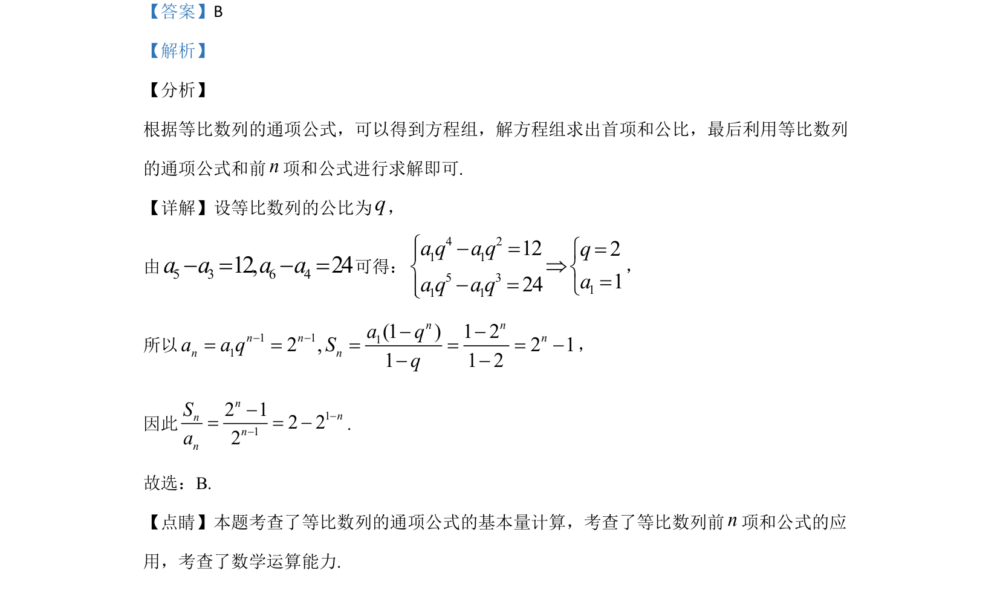

考点：等比数列 通项公式 前n项和 基本量计算
该题考查等比数列中已知两项差求首项和公比，并计算通项与前n项和的关系式。

📄 原 PDF 第 4 页：
素材/真题/吉林/2008-2024·（吉林）数学高考真题/2020年高考数学试卷（文）（新课标Ⅱ）（解析卷）.pdf
6.记Sn为等比数列{an}的前n项和．若a5–a3=12，a6–a4=24，则nnSa=（ ） A. 2n–1 B. 2–2 1–n C. 2–2n–1 D. 21–n–1
【答案】B 【解析】 【分析】 根据等比数列的通项公式，可以得到方程组，解方程组求出首项和公比，最后利用等比数列 的通项公式和前n项和公式进行求解即可. 【详解】设等比数列的公比为q， 由5 3 6 412, 24a a a a- = - =可得： 4 21 15 311 1122124a q a qqaa q a qì- ==ìïÞí í=- =ïîî ， 所以 1 111(1 )1 22 , 2 11 1 2nnn n nn na qa a q Sq- ---= = = = = -- - ， 因此 112 12 22nnnnnSa---= = -. 故选：B. 【点睛】本题考查了等比数列的通项公式的基本量计算，考查了等比数列前n项和公式的应 用，考查了数学运算能力.